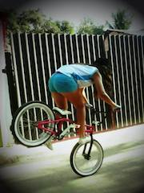

BMX
The sport of bicycle motocross, or BMX as itʼs more widely known, originated in America in the early 1970s. It was designed as a stepping stone for kids to get into motocross, and quickly blew up into a sport in its own right.
Freestyle BMX is bicycle motocross stunt riding on BMX bikes. It is an extreme sport descended from BMX racing that consists of five disciplines: street, park, vert, trails, and flatland. In June 2017, the International Olympic Committee announced that it was to be added as an Olympic event to the 2020 Summer Olympics.
I have been practice this sport since 2013, I can do some bmx tricks like "Bunny hop", "Manual" or "Footjam".
